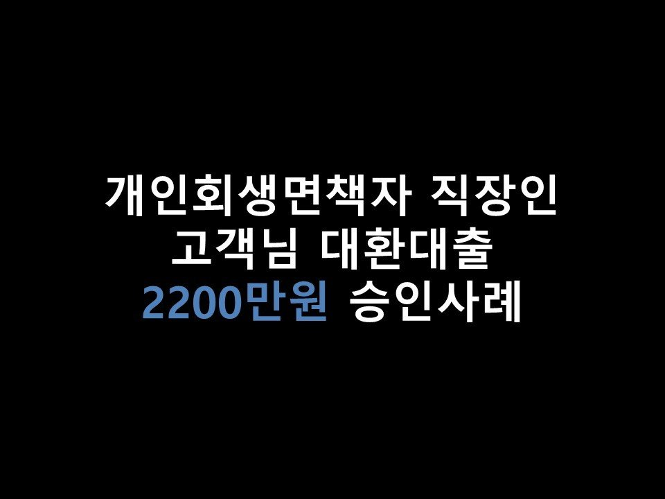
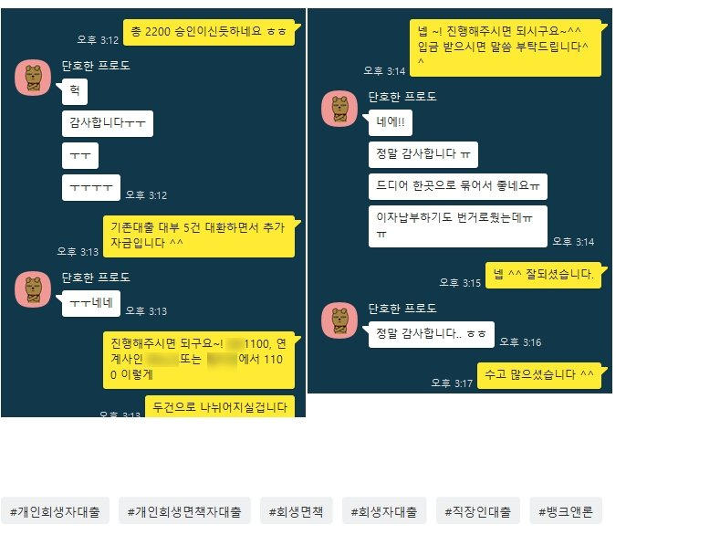

★개인회생면책자 직장인 고객님 대환대출 2200만원 승인사례★

안녕하세요 ~ 오늘은 개인회생자 직장인 고객님의 대출승인 사례를 소개해드리겠습니다 ^^
고객님께서는 현재 4대보험 가입되는 직장에서 8개월간 근무하셨으며, 월 소득은 250만원 통장으로 꾸준히 수령받고 계셨습니다 ^^
올해 8월 회생면책되셨으며, 이용중이신 대출로는 리드코프 300만, 제니스 300만, 넥스젠 400만, 에이원 240만, MSI 300만, 전북은행 880만원으로 대부만 5건이 있으셨습니다.
대부 과다로 신용점수가 안오르시고 있는상태이셨으며, 생활자금이 필요하셔서 문의를 남겨주셨습니다.
현재 고객님께서 대출건수가 과다하셔서, 기존대출을 통합하면서 추가자금이 나올 수있을지 알아봐드리겠다고 안내를 드렸습니다.
고객님께서 서류 준비가 모두 완료되신 후, 저축권부터 조회를 해드렸으나, 결과는 부결이었습니다.
저축권에서도 대부대출건수가 너무 과다하면 대환대출승인이 어려운지라..
아무래도 대부업권중 대출 통합상품이 따로있는 금융사로 진행을 도움드려야 할듯보여,
그쪽으로 조회해드린결과 K사 1100만원, M사 1100만원 총 2000만원, 금리 20% 의 한도가 나오게 되었습니다 ^^ (기존대출 대부 5건 통합조건)
현재 고객님께서 사용하고 계시는 대부업대출중 대다수가 24%금리였기 떄문에, 저금리로 대환도 같이 진행되게 되었습니다~
고객님께서는 매우 만족해하시며 진행을 원하셨습니다. 그리하여 기존대출 대부 5건을 2건으로 통합함과 동시에 저금리대환, 추가자금 600만원이상까지 온전히 승인받으실 수있게 되셨습니다~
이번에 대출건수가 많이 줄어든 만큼, 추후 3개월 정도 이후에 다시한번 대부대출 저축권으로 통합 알아봐드리겠다고 말씀드린 후 상담 마무리하였습니다 ^^.
아래는 저와 고객님의 카톡대화내용의 일부입니다. 참고 부탁드립니다 ^^
감사합니다~!
